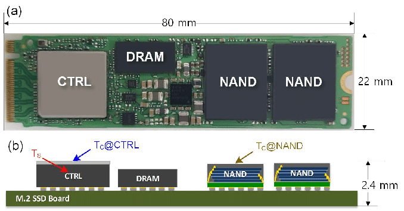

Solid State Drive (1991)
之前的持久存储介质都有致命的缺陷
- 磁：机械部件导致 ms 级延迟
- 坑 (光): 一旦挖坑，填坑很困难 (CD 是只读的)

密度和速度：最后还得靠
- Flash Memory “闪存”
- Floating gate 的充电/放电实现 1-bit 信息的存储

Flash Memory: 几乎全是优点
分析
- 价格
低 (大规模集成电路，便宜)
- 容量
高 (3D 空间里每个 $(x, y, z)$ 都是一个 bit)
- 读写速度
高 (直接通过电路读写)- 不讲道理的特性：容量越大，速度越快 (电路级并行)
- 快到淘汰了旧的 SATA 接口标准 (NVMe)
- 可靠性
高 (没有机械部件，随便摔)
但有一个意想不到的
USB Flash Disk (1999)

优盘容量大、速度快、相当便宜
- 很快就取代了软盘，成为了人手 $n$ 个的存储介质
- Compact Flash (CF, 1994)
- USB Flash Disk (1999, “朗科”)
放电 (erase) 做不到 100% 放干净
- 放电
数千/数万次 以后，就好像是 “充电” 状态了 - Dead cell; “wear out”
- 必须解决这个问题 SSD 才能实用
优盘和 SSD 的区别
优盘, SD 卡, SSD 都是 NAND Flash
- 但软件/硬件系统的复杂程度不同，效率/寿命也不同
- 典型的 SSD
- CPU, on-chip RAM, 缓存, store buffer, 操作系统 ...
- 寿命: ~1 PiB 数据写入 (~1,000 年寿命)

- SD 卡
- SDHC 标准未规定
- 黑心商家一定会偷工减料
- 但良心厂家依然有 ARM 芯片
- SDHC 标准未规定
- 典型的 SSD
- × 宝 9.9 包邮的优盘，芯片一毛钱都能省……
优盘和 SSD 的区别 (cont'd)
软件定义磁盘：每一个 SSD 里都藏了一个完整的计算机系统

- FTL: Flash Translation Layer
- “Wear Leveling”: 软件管理那些可能出问题的 blocks
- 像是 managed runtime (with garbage collection)
Wear Leveling
再一次，VR 眼镜
- Logical block address (LBA) → Physical block address (PBA)
道理简单，实现困难
- SSD 的 Page/Block 两层结构
- Page (读取的最小单位, e.g., 4KB)
- Block (写入的最小单位, e.g., 4MB)
- Read/write amplification (读/写不必要多的内容)
- Copy on write
- “VR 眼镜” 本身也需要更新
FTL 带来的性能、可靠性、安全性问题

大家可记得修电脑引发的血案？
- 首先，(快速) 格式化是没用的
- (M5 会告诉你这一点)
- 在你理解了 FTL 之后
- 即便格式化后写入数据 (不写满)
- 同一个 logic block 被覆盖，physical block 依然存储了数据 (copy-on-write)
- 需要文件系统加密
- 即便格式化后写入数据 (不写满)
另一个 memory system 相关的安全问题
- Row Hammer (TCAD'19)
- 更重的负载可能会 “干扰” 临近的 DRAM Cells
SSD 的可靠性：另一个故事
什么？硬件里的软件？
- 其实非常复杂：算法, cache; store buffer; ...
谁写出来的？那可得有 bug 啊！
- 让我们好好构造疯狂的 workloads，把它弄挂吧！